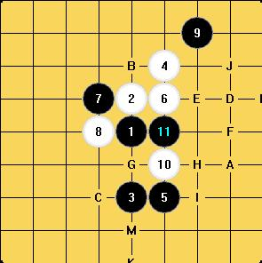

瑞星普及教育 谁来给我们讲讲
#1 瑞星普及教育 谁来给我们讲讲 作者：飞熊 发表时间：2008-11-24 10:36:02
#2 Re:瑞星普及教育 谁来给我们讲讲 作者：飞熊 发表时间：2008-11-24 10:41:36
如图一般的瑞星定式到此为止那后面有几个12
之后中盘的情形如何
哪位高手稍微给我们讲一讲啊
#3 Re:瑞星普及教育 谁来给我们讲讲 作者：歇斯底里 发表时间：2008-11-24 15:05:11
有个贴讲过的，你在论坛里搜搜吧#4 Re:瑞星普及教育 谁来给我们讲讲 作者：飞熊 发表时间：2008-11-24 15:30:15
翻遍论坛也没有啊#5 Re:瑞星普及教育 谁来给我们讲讲 作者：堂堂 发表时间：2008-11-26 12:45:02
Ando写的瑞星20近年的变化，翻译过来，贴过了
#6 Re:瑞星普及教育 谁来给我们讲讲 作者：飞熊 发表时间：2008-11-26 13:18:50
不全啊再全面深入点就好了啊
#7 Re:瑞星普及教育 谁来给我们讲讲 作者：堂堂 发表时间：2008-11-26 13:21:55
Ando写的都符合不了你胃口，你让谁写去
#8 Re:瑞星普及教育 谁来给我们讲讲 作者：飞熊 发表时间：2008-11-26 14:06:15
谁有能力谁写大家不要把安度当成神好不好啊
连珠界的神只有一个那就是中村茂
其他人顶多算是高手
#9 Re:瑞星普及教育 谁来给我们讲讲 作者：无尽 发表时间：2008-11-26 14:50:58
楼上还是学棋的就应该虚心点，态度十分让人不屑。你还来这里问干嘛，Ando都看不上眼，况且别人也没说Ando是神。谁有能力早写出来并且被争相传颂了，你还会找不到？#10 Re:瑞星普及教育 谁来给我们讲讲 作者：飞熊 发表时间：2008-11-26 15:41:54
切我没有不谦虚啊
我只是说安度和中村茂没法比而已
论坛是大家的
说句话都犯法啊
看来你是政府的人
看不惯我们这些小市民的做法啊
#11 Re:瑞星普及教育 谁来给我们讲讲 作者：无尽 发表时间：2008-11-26 17:46:25
看来楼主只会上纲上线#12 Re:瑞星普及教育 谁来给我们讲讲 作者：游戏人间 发表时间：2008-11-26 20:49:12
标注的点都能下。恩基础
#13 Re:瑞星普及教育 谁来给我们讲讲 作者：无尽 发表时间：2008-11-26 21:09:30
J点黑杀了
#14 Re:瑞星普及教育 谁来给我们讲讲 作者：游戏人间 发表时间：2008-11-26 21:16:00
能杀就是研究了。研究不算基础。#15 Re:瑞星普及教育 谁来给我们讲讲 作者：游戏人间 发表时间：2008-11-26 21:17:23
何况刚才那个在外国棋手眼里也能下的。那么就算基础#16 Re:瑞星普及教育 谁来给我们讲讲 作者：无尽 发表时间：2008-11-26 22:49:13
不明白这里的基础含义是啥#17 Re:瑞星普及教育 谁来给我们讲讲 作者：飞熊 发表时间：2008-11-28 11:46:09
昨天听了天羽老师讲的名人战的课我并不觉得日本像你们说的那么落后啊
相反日本棋手比某些人更懂得下棋
#18 Re:瑞星普及教育 谁来给我们讲讲 作者：非鸟 发表时间：2008-11-29 14:35:27
日本的研究还不落后啊 你有没有仔细看名人战啊,
什么才是懂得下棋啊.好象只有日本棋手懂得下棋啊
既然还有人争论ＡＮＤＯ和中村谁更强
#19 Re:瑞星普及教育 谁来给我们讲讲 作者：暮雨迟 发表时间：2008-11-29 18:18:41
 杂像在口水战?
杂像在口水战?
#20 Re:瑞星普及教育 谁来给我们讲讲 作者：wrwak 发表时间：2008-11-29 21:27:25
ls威望为0也能发帖？#21 Re:瑞星普及教育 谁来给我们讲讲 作者：行云流水 发表时间：2008-11-30 0:47:26
首先表明，以下观点，仅代表个人看法，不意味支持任何一方，也不参与口水仗。
日本棋手的整体研究确实不如中国棋手，就世界范围讲，要比中国棋手研究更深入的，恐怕也没有其他国家的棋手可以做到了。
但是日本对棋并不是在简单的胜负，或者研究的深入程度上下功夫，他们更注重的是一种文化的继承，在努力把五子棋作为一种文化进行推广，这一点上我们还有很多值得向他们学习的地方。
个人推崇中村茂。呵呵，仅仅个人喜好问题。因为中村的时代是没有依靠辅助计算设备的时代，在那样的时代能创造出那么多定式，取得那样的成绩，是该值得尊敬的，也是所以说，现在没有棋手可以和他相比的原因吧。
#22 Re:Re:瑞星普及教育 谁来给我们讲讲 作者：有志青年 发表时间：2008-11-30 9:38:19
引用：魅力大于3即可回复，威望大于0方可发主贴，否则只能回复。
原文由 wrwak 发表于 2008-11-29 21:27:25 :
ls威望为0也能发帖？
#23 Re:Re:瑞星普及教育 谁来给我们讲讲 作者：walker 发表时间：2008-11-30 12:19:55
引用：
原文由 游戏人间 发表于 2008-11-26 20:49:12 :标注的点都能下。恩基础
高手啊，仰望一下。
#24 Re:瑞星普及教育 谁来给我们讲讲 作者：越狱行辕 发表时间：2008-11-30 12:29:59
 俺也喜欢中村茂，而且我感觉 ANDO太狂了
俺也喜欢中村茂，而且我感觉 ANDO太狂了
#25 Re:瑞星普及教育 谁来给我们讲讲 作者：飞熊 发表时间：2008-12-1 11:16:05
哈哈安度不是狂是太年轻
也许就自然的缺少点深度
或者对五子连珠的敬畏之心
#26 Re:瑞星普及教育 谁来给我们讲讲 作者：飞熊 发表时间：2008-12-1 16:21:49
有道理啊不过各位离本帖的主题越来越远了啊
#27 Re:瑞星普及教育 谁来给我们讲讲 作者：飞熊 发表时间：2008-12-1 16:57:13
那就接着聊中村 安度之流
#28 Re:瑞星普及教育 谁来给我们讲讲 作者：兔子哥哥 发表时间：2008-12-7 3:23:25
俺想听听ANDO人品坏和棋品坏的故事，哪位老师给俺讲讲，也让俺认清一下ANDO的丑陋面目，不再误俺！#29 Re:瑞星普及教育 谁来给我们讲讲 作者：小红眼镜 发表时间：2008-12-11 15:47:23
 我怎么就觉得ando挺好的勒~。。。。
我怎么就觉得ando挺好的勒~。。。。